Project Progress Timeline
This page documents how the NutriGuide website was planned, designed and developed over six weeks.
Week 1 · Community survey & awareness (30-06-25 to 05-07-25)
 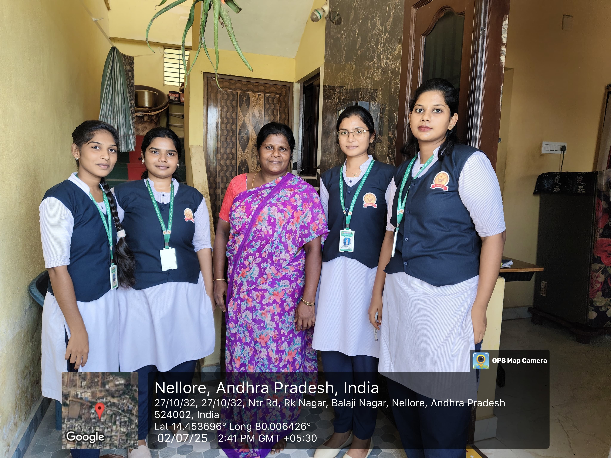
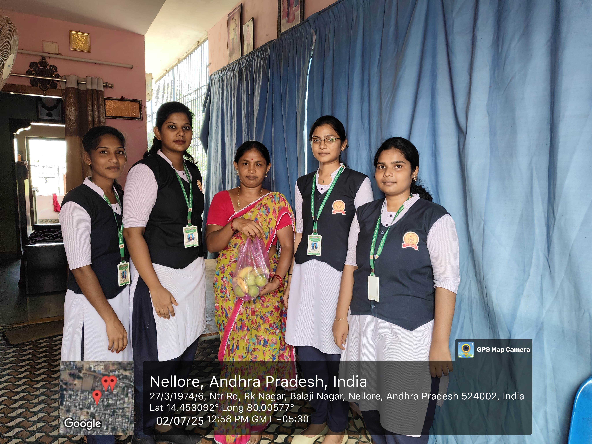
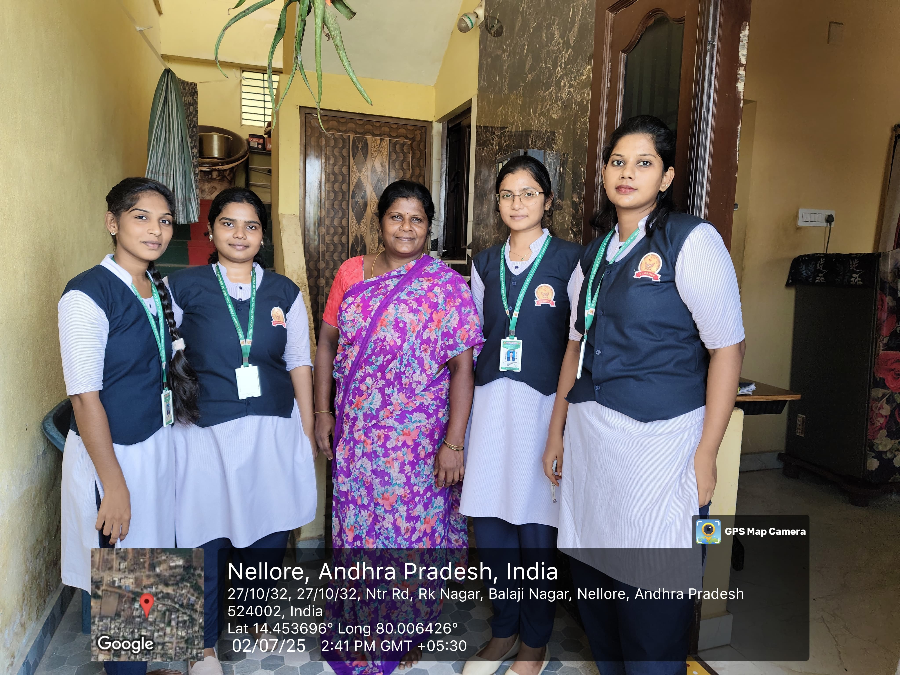
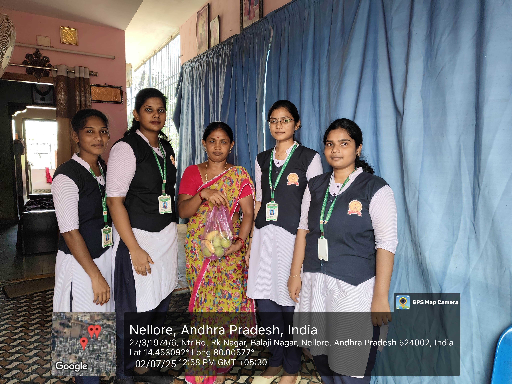
Day 1 (30-06-25): Visited Sachivalayam in NTR Nagar to take permission
for conducting the nutrition survey.
Day 2 (01-07-25): Conducted the survey in different streets of
NTR Nagar, Nellore district, interacting with community members.
Day 3 (02-07-25): Collected detailed information on daily food habits,
preferences and nutrition awareness of the people. This helped us realise the importance
of being grateful for what we have and supporting others as much as possible.
Day 4 (03-07-25): Continued the enquiry on food habits and documented
the difficulties people are facing in following a proper diet, especially due to
financial and lifestyle limitations.
Day 5 (04-07-25): Started creating awareness about healthy food habits
and the need for a proper balanced diet for all age groups.
Day 6 (05-07-25): Visited houses in our neighbourhood to spread awareness
on balanced diet, explaining simple practical changes families can adopt. We understood
that enquiry is the first step for any meaningful action.
Week 2 · Data entry & analysis of survey (07-07-25 to 12-07-25)
 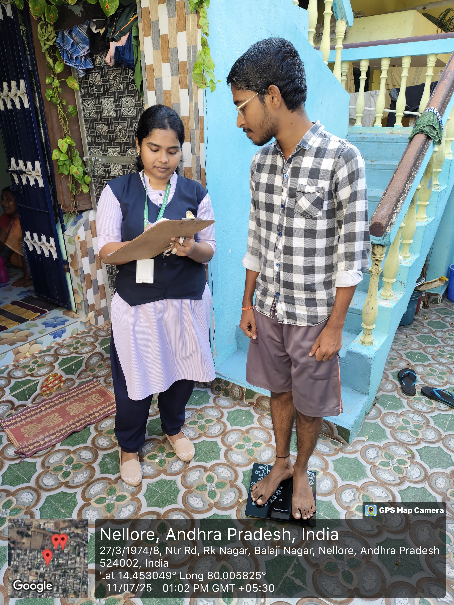
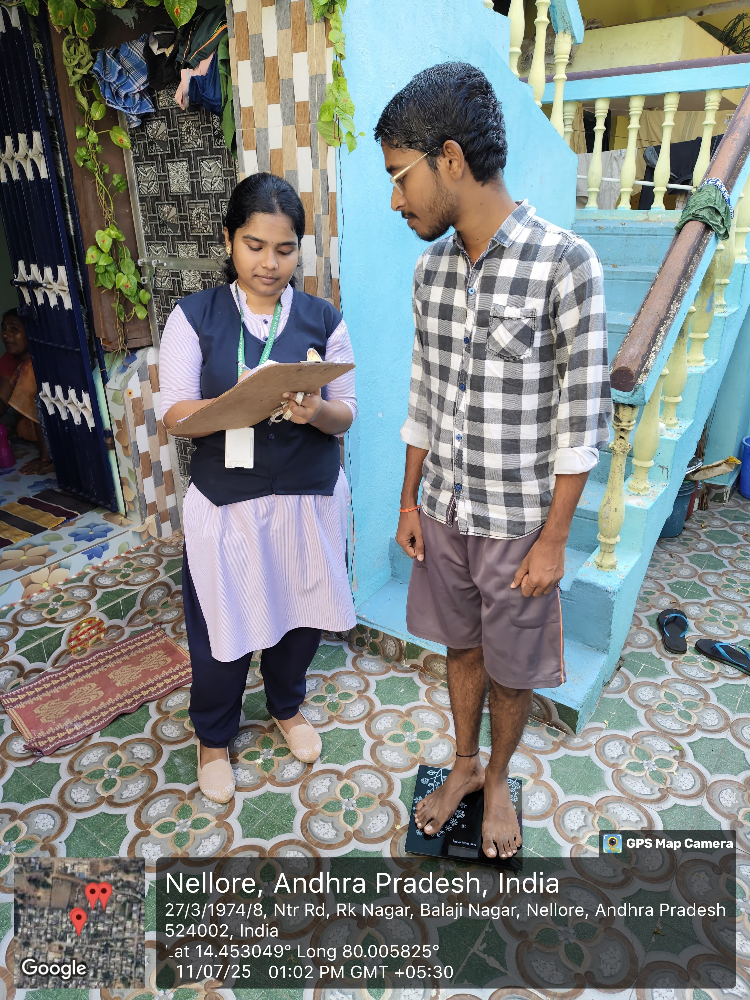
 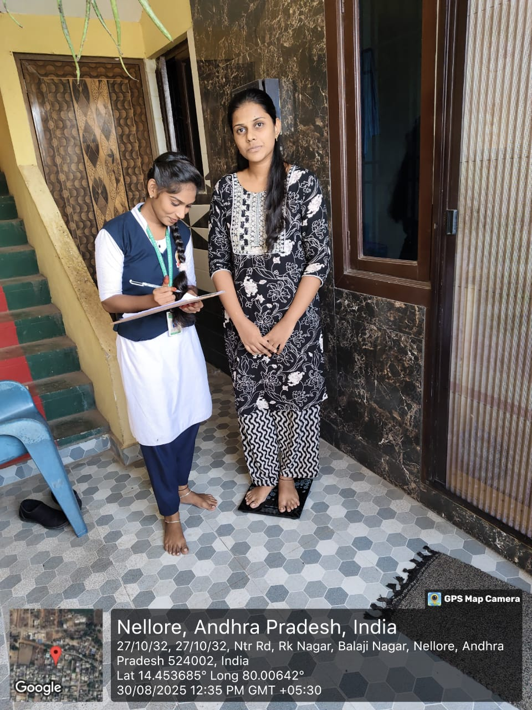
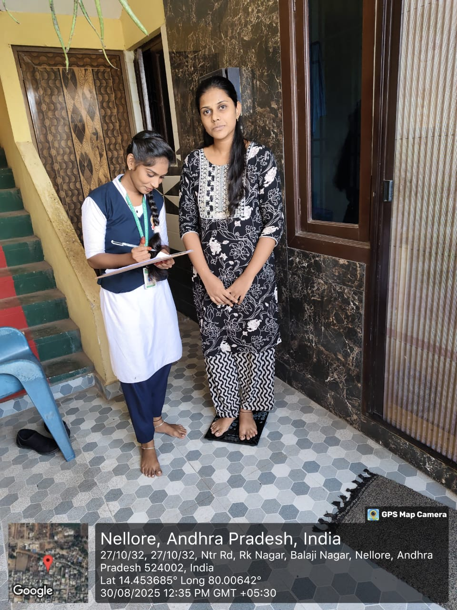
Day 1 (07-07-25): Decided the theme for our awareness speech on
food habits and nutrition. Planned how to organise the programme and
learnt how to structure a small survey and talk for the community.
Day 2 (08-07-25): Conducted an awareness programme on food
habits and nutrition. Everyone was encouraged to share their own experiences
and feelings, which helped us understand different points of view.
Day 3 (09-07-25): Explained to people how to maintain a
nutritious diet in simple language using daily examples. This created more
awareness about what they are eating every day.
Day 4 (10-07-25): Spoke about the importance of a
balanced diet and why proper food is a basic need for every
person, not a luxury.
Day 5 (11-07-25): Continued the survey and noted the
problems faced by citizens in following healthy food habits. We realised that
sharing our knowledge is one of the best ways to truly help people.
Day 6 (12-07-25): Visited more houses in the survey area and
listened patiently to the feelings and difficulties of each family. We learnt
that being patient and listening carefully makes people feel respected and
happy.
Week 3 · Planning the NutriGuide website (14-07-25 to 19-07-25)
 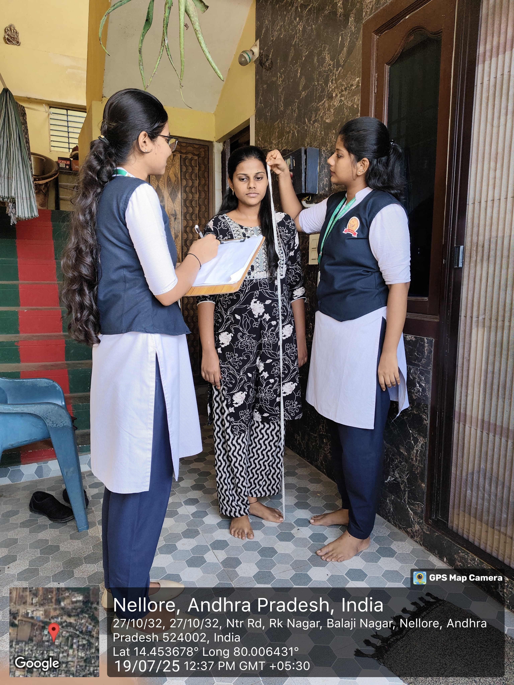
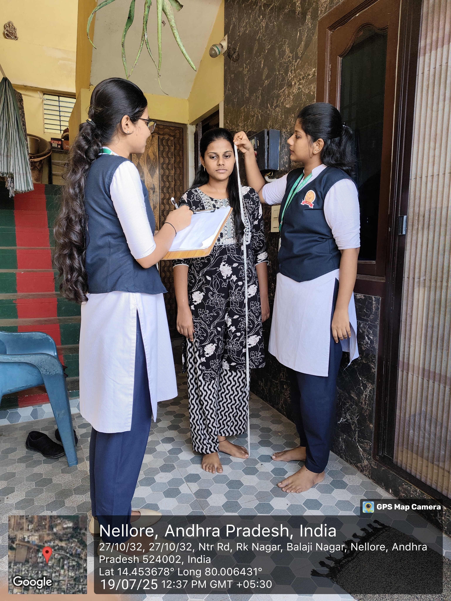

Day 1 (14-07-25): Visited houses to calculate the
Body Mass Index (BMI) of people using their height and
weight. This helped us to share our knowledge about health in a practical
way.
Day 2 (15-07-25): Continued measuring height and weight of
more people. We understood that patience is very important while collecting
health information from the community.
Day 3 (16-07-25): Calculated the BMI values from the
measured heights and weights. We gained experience in organising and
re-checking the data we had collected.
Day 4 (17-07-25): Gave information to people who were in the
early stages of obesity about how to control their weight through proper diet
and healthy lifestyle changes.
Day 5 (18-07-25): Educated people who were already
overweight about how to follow a careful diet and what type of exercises
would suit them. This created awareness in the community about the risks of
overweight and obesity.
Week 4 · Designing and coding the website (21-07-25 to 26-07-25)

Day 1 (21-07-25): Visited houses in our area to explain
about healthy food habits and a balanced diet. We realised that poverty is
still a major reason why many people struggle to follow a proper diet.
Day 2 (22-07-25): Conducted another awareness session on how
to maintain a healthy diet using locally available and affordable foods. This
taught us to be patient and sensitive to each family’s situation.
Day 3 (23-07-25): Visited more houses to talk about
nutritious food and the importance of regular exercise. We
learnt that yoga and exercise are some of the best medicines for keeping the
body and mind healthy.
Day 4 (24-07-25): As part of the survey we distributed some
fruits to the people. This small action helped us promote the idea that
fruits are simple, tasty and highly nutritious food items that should be part
of everyday diet.
Week 5 · Testing, feedback & refinement (28-07-25 to 02-08-25)
 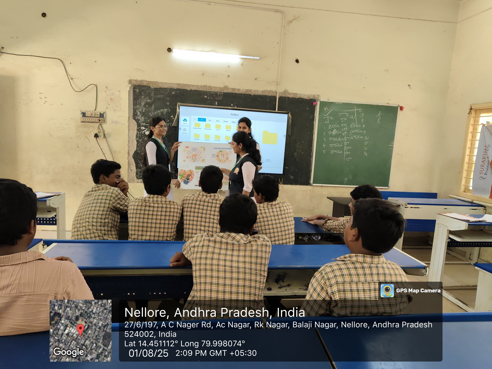
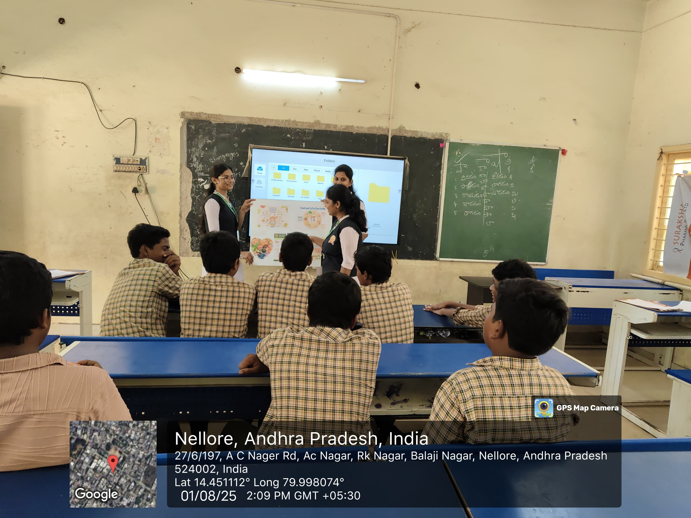
 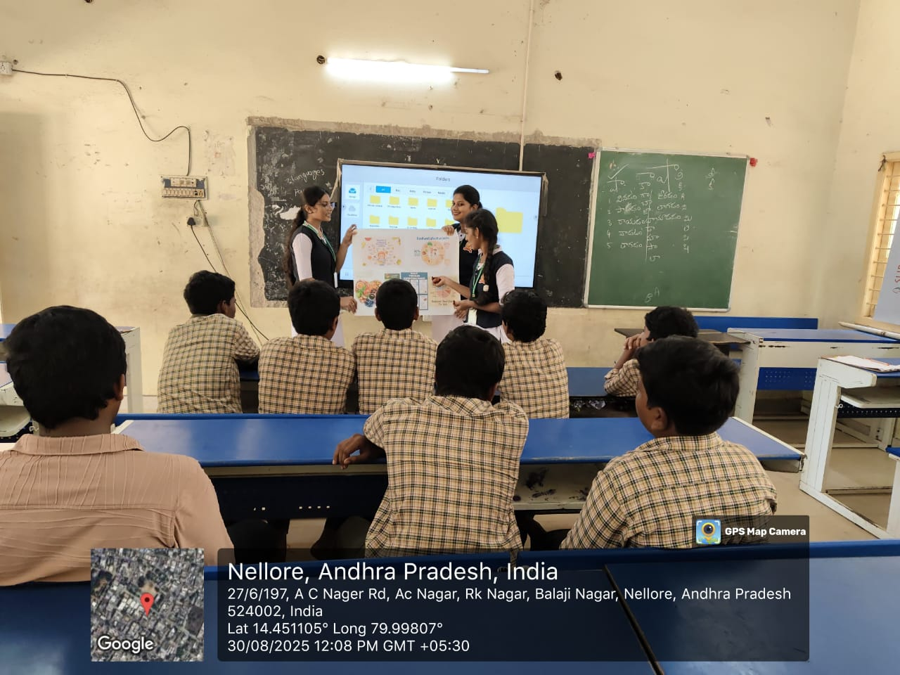
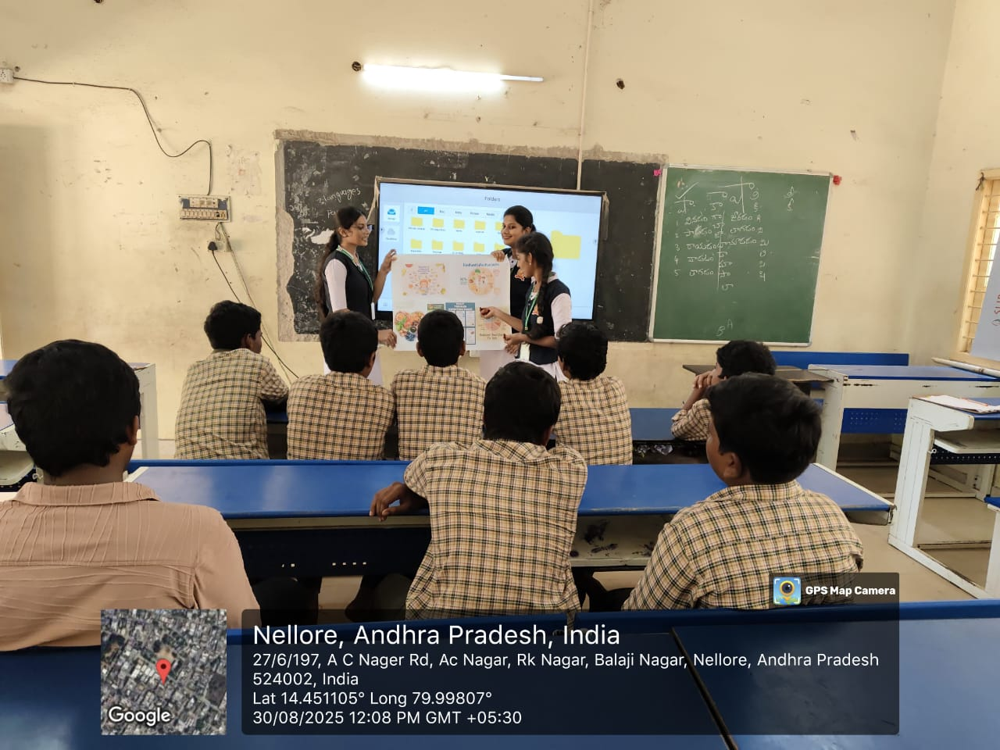
Day 1 (28-07-25): Visited the nearby high school and took
permission from the Head Master to conduct our nutrition awareness activities.
We interacted with school officials and introduced the theme of our project to
them.
Day 2 (29-07-25): Conducted an awareness programme on
nutrition for the school children, explaining the importance of regular meals,
breakfast and healthy snacks.
Day 3 (30-07-25): Carried out a small survey among the
students about their food habits and problems. We found that many of their
health issues were linked to not taking a proper diet.
Day 4 (31-07-25): Explained to the students how to maintain a
nutritious diet and why both food and exercise together are
the best medicine for a healthy life.
Day 5 (01-08-25): Visited the primary school in our survey
area and motivated younger students to follow healthy habits from childhood
itself.
Day 6 (02-08-25): Continued awareness activities for the
school children, talked with them individually and identified their personal
problems related to food and health.
Week 6 · Awareness programme & final documentation (04-08-25 to 09-08-25)


Day 1 (04-08-25): This day was the festival of Bakrid, so we
did not conduct the survey. We learnt to be patient and respect community
occasions and festivals.
Day 2 (05-08-25): Conducted an awareness session for people
who are living with diabetes. We explained why they should
avoid sugary foods and follow regular medical advice.
Day 3 (06-08-25): Gave more detailed information about diet
control for diabetic people, including the importance of fibre-rich foods and
regular monitoring. We understood that working hard for a good cause gives
real happiness.
Day 4 (07-08-25): Visited the area again to interact with the
people and to know their response towards the awareness programmes we had
conducted. We felt that even small help and guidance can give a lot of
satisfaction.
Day 5 (08-08-25): Continued to inform people about healthy
food habits and nutrition, stressing that taking precautions regarding health
is a “must and should”, not optional.
Day 6 (09-08-25): Final day of our project. We took
photographs of all major activities and completed documentation so that our
work and learning can be presented properly in the record and website.